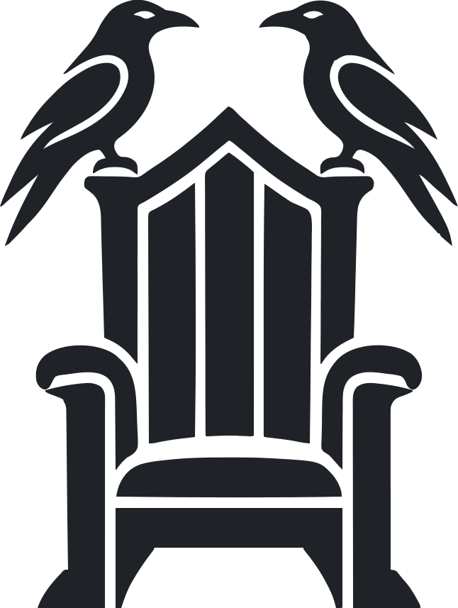

vegardjorg.github.io
Vegard Cowie Jørgensen
Datasikkerhet og agentisk koding. Jeg bygger verktøy som lar KI-agenter jobbe lenge og selvstendig, med kontroller, sporbarhet og kostnad under oppsyn.
Artikler
Erfaringer fra eget arbeid
Sikkerhetsarkitektur og KI
Når KI-en bare får lov til det brukeren får lov til
Erfaringer med sikkerhetsarkitektur, prompt injection og red teaming i et skybasert fagsystem for mange virksomheter.
Interesser
Datasikkerhet
Tilgangskontroll, angrep, krypto og risiko. Også sikkerheten rundt KI-agenter.
Harness og engineering rundt agenter
- Harness: Egen worktree per oppgave. Kontroller agenten ikke styrer selv.
- Sporbarhet og logging: Hver leveranse spores til en commit og en kontrollkjøring.
- Tokenoptimalisering: Mindre kontekst per tur. Kostnad målt per oppgave.
Skoleprosjekter
Interaktive eksamensguider
Bygget så enkelt som mulig, med ren HTML, CSS og vanilla JavaScript. Ingen rammeverk og ingen byggesteg, så guidene kan hostes rett på GitHub Pages.
Algoritmer og datastrukturer
Sortering, søk, heap, trær, hashing og grafer, med visualiseringer du kan styre selv.
Built with Claude Åpne guiden → IN2090Databaser og datamodellering
ER-modellering, relasjonsalgebra, SQL, normalisering, sikkerhet og indekser.
Built with Claude Åpne guiden → IN2120Informasjonssikkerhet
Krypto, PKI, angrep, autentisering, IAM og nettverk, knyttet til eksamensoppgavene H2021–H2025.
Built with Claude Åpne guiden →Andre prosjekter


RavenseatEngineering-disiplin for Claude Code-agenter. Bevis fremfor tillit.
Slik jeg har erfart det, har KI-agenter som koder i dag klare svakheter: åpenbare sikkerhetshull, instruksjoner som glemmes og viktig kontekst som forsvinner ved kompaksjon. Ravenseat er mitt dypdykk i hvordan noen av dem kan begrenses.
Det er et koordineringslag rundt Claude Code som kjører et helt prosjekt fra én samtale. Kø, planer og beslutninger ligger i filer, ikke i konteksten, så arbeidet overlever kompaksjon, krasj og omstart. Agentene jobber parallelt i hver sin worktree; ingenting merges før prosjektets egne kontroller er grønne på akkurat den commiten.
Med Ravenseat sikter jeg på å omsette det jeg lærer på skolen i praksis: programvarearkitektur, arbeidsprosesser i utvikling og sikkerhet.
Built with Claude-
Isolasjon
- Én fersk agent per oppgave, med egen worktree, egen branch og et oppdrag skrevet til fil
- Eierskap per fil: to spor rører aldri de samme filene samtidig
- Avhengigheter styrer rekkefølgen, og merges skjer én om gangen under lås
- Rød kontroll gir en fiksrunde, høyst tre, deretter et spørsmål til eieren
-
Fail-closed vakter
- Hooks blokkerer push og skriving til kontrollfiler; går vakta tom for tid, blokkerer den
- Ny
.onlystopper merge; slettede tester og tømte asserts flagges - Valgfri hemmelighetsskann av hver commit før merge
- Red team-suite i CI på Linux og Windows
-
Bevis, ikke tillit
- Kontrollresultatet bindes til commit-SHA, og merge leser bare den posten
- Agenten godkjenner aldri eget arbeid: egne review-agenter etter risikoklasse, også én som prøver å motbevise leveransen
- Rapporter, overleveringer og eierbeslutninger skrives til filer, med logg over hver overstyring
- Køfilene skrives transaksjonelt med journal, så et krasj midt i en skriving repareres i stedet for å korrumpere
-
Kostnad under oppsyn
- Kompaksjon ved 300k i stedet for nær 1M
ravenseat costper oppgave: flagger uvanlig tokenbruk og unødvendige fillesinger- Valgfritt dagsbudsjett stopper nye starter
- Når ingenting kan kjøre, venter køen uten å bruke tokens